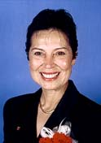
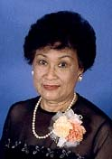
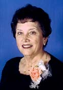
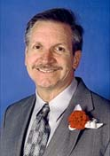
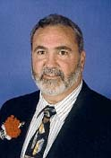
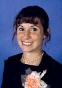
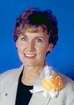
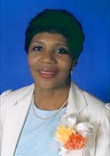

Introducing the 1999-2000 Alameda County
and District Teachers of the YearThe goal of the California Teachers of the Year Program is to identify and honor outstanding teachers throughout California. It celebrates and pays special tribute to the tireless efforts of our state's outstanding teachers. In doing so, the program brings well-deserved recognition to the whole teaching profession.
Each year, districts select their Teacher of the Year. Those honored may then participate in the Alameda County Teacher of the Year program. A panel then selects two of these candidates to represent Alameda County in the California Teacher of the Year Program.
The state selection committee selects five teachers to represent California teachers during the year, speaking for, energizing and symbolizing the positive contributions of the teaching professional statewide. Those California Teachers of the Year then compete in the National Teacher of the Year Program, and that teacher becomes a spokesperson for teachers throughout the nation.
2000 Alameda County Teachers of the Year
New Haven Unified School District
“I see myself as a bit of an evangelist for good books and the power of reading, for the potential of young people and our responsibilities as educators to develop it. I want to be the best teacher possible.”
 Rebecca Ruiz Radulovich
Sunol Glen Unified School District"Teaching is no longer just a matter of providing students with instruction in the skills necessary for success in reading, writing and mathematics. It is a matter of understanding the uniqueness of each student and providing them with the tools to reach their fullest human potential."
1999-2000 District Teachers of the YearClick here for additional biographical information on the
District Teachers of the Year. Rufina "Ping" Mejia
Alameda Unified School District“Every child is like a blank slate when that child enters school. Each day something is painted and printed on that page. That page increases in number and becomes a beautiful book upon graduation. I am very proud to have contributed to that book.”
Janice Gidlund
Castro Valley Unified School District“My philosophy of teaching is tied up in the fact that we don't know who is in our classroom each year. Future heart surgeons? Inventors of life-saving machinery? The next Beethoven or Robin Williams? Future wonderful moms and dads? My job comes with an awesome responsibility. I take it seriously.”
 Julia Gustas Antoniades
Emery Unified School District“Each child has been endowed with a unique gift which is not always self-evident, for often it is still wrapped or cocooned. The teacher juggles all her skills, calls upon her parent, colleagues, and administrative partners to find the way to get past the child's shield which too often covers the fear of failure, the fear of risk taking..”
 Don Reed
Fremont Unified School District“I can honestly say I have never had a student I did not like. Each student is an individual and requires a slightly different approach. I want my kids to have the best chance in life they possibly can. School is a safe place to find out about life and we as teachers must make that clear.”
 Bruce Wolfe
Livermore Valley Joint Unified School District“Teachers should plant not only knowledge in their students, but also team work, self-esteem, motivation, self-direction, respect, friendship, discipline, pride and a sense of accomplishment. One of the best rewards a teacher can receive is knowing that the 'light bulb has been lit'."
 Robin Burns
Newark Unified School District“Someone once asked me why I enjoyed working with children. They just couldn't imagine how I could spend days with a little person whose nose was running and asked a million questions. I simply answered, 'Unconditional love'.”
Thomas Charles Hall
Pleasanton Unified School District“My objective is to inspire all of my students to become lifelong learners. The most effective way I have found to do this is to make my subject matter (physics) both possible and relevant. I try to 'chop into small bits' whatever concepts I am teaching, to make it possible for every student to learn and succeed.”
 Jill Elhorn
San Leandro Unified School District“I believe that next to the family, the institutions of education have the greatest impact on individuals who then make up our society. I want the children in my class to take pride in all that they do, to feel they are capable, to persevere on a problem, and to know that they can get help when they need it.”
 Silver White
San Lorenzo Unified School District“A teacher must never stop becoming a learner, for it is in that never-ending learning that I learn how to teach. If there is anything outstanding about my teaching, it is that I now try to shape minds, whether in adults or children, as opposed to teaching a curriculum.”
 Alameda
County Office of Education
Alameda
County Office of Education
All contents copyright
(C) 1999, Alameda County Office of Education.
All rights reserved.
URL: http://alameda-coe.k12.ca.us